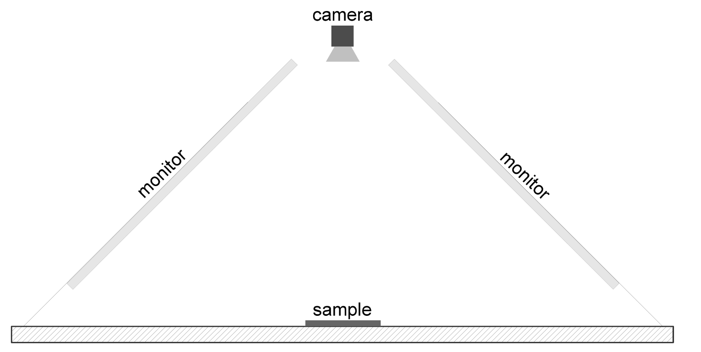

Setup
Pictures have been acquired in a dark room with a Canon EOS 40D DSLR camera. The camera was placed 48cm above the sample to be acquired, with the optical axis perpendicular to the surface of the sample. The lenses used had a focal length of 85mm, and a camera aperture of f/11.3; each picture has been taken with four seconds of exposition time. As illuminants, we used a pair of monitors (22 inches Samsung SyncMaster LED monitor) positioned above the sample and tilted by 45 degrees, with about 20cm of space between their upper edges to make room for the camera. By illuminating different regions of the monitors, and by using different colors we simulated natural and artificial illuminants coming from different directions and at various intensity levels. The two monitors have been colorimetrically characterized using a X-Rite i1 spectral colorimeter, in such a way that the device RGB coordinates can be used to accurately render the desired chromaticites. Daylight at 6500 K (D65) has been specified as a white point. Fig. 3 shows the setup used for the acquisitions.
Each 3944 x 2622 picture in the camera space has been converted to standard sRGB and the final texture images have been obtained by cropping the central region of 800 x 800 pixels. To allow the estimate of the illuminants we have carried out the program of 46 shots of a 24 squares Macbeth ColorChecker.

Acquisition conditions
For each sample a program of 46 shots has been followed:
- intensity variations: 4 shots have been taken while illuminating the whole monitors with neutral light (D65) at different levels of intensity (100%, 75%, 50% and 25% of the maximum achievable level).
- light direction: 9 shots have been taken with the light (D65) coming from different angles. In the first eight of these shots only a band covering 40% of a single monitor has been lit. The angle between the direction of the light coming from the center of the illuminated band and the surface of the sample are 24, 30, 36, 42, 48, 54, 60, and 66 degrees. For the last shot two bands covering the upper 20% of each monitor have been lit (since on average the light comes exactly from above the sample, we count it as an angle of 90 degrees).
- Daylight: 12 shots have been taken while simulating natural daylight at 12 different color temperatures in the range from 4000 K to 9500 K with a step of 500 K (we will refer to these as D40, D45,..., D95). The whole monitors have been lit during these shots.
- Indoor illumination: 6 shots have been taken while simulating an artificial light with a color temperature of 2700 K, 3000 K, 4000 K, 5000 K, 5700 K and 6500 K on the two whole monitors. We considered LED lights produced by OSRAM and we computed the corresponding RGB values starting from the chromaticities indicated in the data sheets from the producer's web site. We refer to these as L27, L30,..., L65.
- Color and direction: 9 shots have been taken by varying both the color and the direction of the illuminant. The combinations of three colors (D65, D95 and L27) and of three directions (24, 60 and 90 degrees) have been considered.
- Multiple illuminants: 3 shots have been taken while the sample is illuminated by two illuminants with different colors (D65, D95 or L27). Bands covering the lower 40% of both the monitors have been lit, using two different colors on the two monitors.
- Primary colors: 3 shots have been taken under pure red, green and blue illuminants.